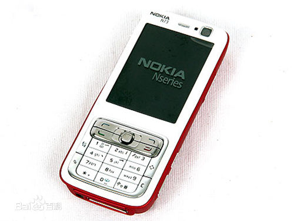

诺基亚6800诞生于2002年，不但拥有9键键盘，也同时拥有QWERTY键盘，且实现方式非常独特。
诺基亚N-Gage主打游戏功能，诺基亚想用这款产品证明手机也可以战胜游戏机。
N90诞生于2005年，采用可变形的旋转设计，旋转后可变身DV摄像机，搭载200万像素的摄像头。
5300是诞生于2006年的一款主打音乐功能的产品，创造性地将音乐播放快进、后退等按键置于机身上。
E71诞生于2006年，机身厚度仅仅为10毫米，并采用了QWERTY全键盘设计。

N73采用了直板造型设计，机身经过了细腻的磨砂处理，酷劲十足，配合华丽的抛光材质，带来比较稳重成熟的手感。
5230是一款时尚的宽屏触控手机，可让您轻松访问媒体库和喜爱的社交网站等。使用的是CMOS感应原件，键盘也是首次采用虚拟QWERTY键。
诺基亚N97是诺基亚公司于2009年推出的采用Symbian 9.4 S60 5.0操作系统的3G智能手机。诺基亚N97在外形方面使用了全触屏+侧滑QWERTY全键盘的设计。
808，诞生于2009年，是一款一款震撼全球的具有高达4100万像素卡尔蔡司摄像头的手机。
诺基亚于2011年11月发布诺基亚N9。诺基亚N9采用了一块3.9英寸电容触摸屏，分辨率为480x854，手机的显示效果在2011年可以算非常出色，在2011年的诺基亚众多手机中处于一流水平。

北京时间2013年7月11日23点，诺基亚Lumia 1020[1] 正式在纽约发布亮相。该机采用了4100万像素的背照式摄像头，也就是该机的主要提升部分，诺基亚称之为迄今为止最为先进的背照式感光元件。

诺基亚6搭载最新的安卓7.0系统，采用一整块铝合金切割打造的机身，搭载5.5寸1080P屏幕，配置高通骁龙430处理器。